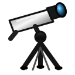

ISO 2026-W07
Week begins: Monday, February 9, 2026
Notation:
Calendar
| Date | Zodiac day | Events |
|---|---|---|
| Mon, Feb 9, 2026 | ♒ 21 | 🌗 Last Quarter — 12:43:07 UTC β Mon — 4 3.8 — Tropical Winter Finest NGC 32 / NGC 2237 · Rosette / C49 / NGC 2237-2239 · Rosette Nebula —  6 5.5 — Tropical WinterC50 / NGC 2244 — 5 4.8 — Tropical Winter |
| Tue, Feb 10, 2026 | ♒ 22 | |
| Wed, Feb 11, 2026 | ♒ 23 | Alhena (γ Gem) — 2 1.9 — Tropical Winter Finest NGC 33 / NGC 2261 · Hubble's Variable Nebula / C46 / NGC 2261 · Hubble's Variable Nebula — — Tropical Winter |
| Thu, Feb 12, 2026 | ♒ 24 | |
| Fri, Feb 13, 2026 | ♒ 25 | Sirius (α CMa) — -1 -1.4 — Tropical Winter Sirius and Sirius B (α Canis Majoris) — — Tropical Winter M41 — 5 4.6 — Tropical Winter α Pic — 3 3.2 — Southern Winter |
| Sat, Feb 14, 2026 | ♒ 26 | |
| Sun, Feb 15, 2026 | ♒ 27 |
Weekly Solar-System Ephemeris
Snapshot: Week begins February 9, 2026, 00:00 UTC.
(-90° to +90°; defaults +45°, 21:00 LAT)
Notation:
| Body | ☉︎ | ☽︎ | ☿︎ | ♀︎ | ♂︎ | ♃︎ | ♄︎ |
|---|---|---|---|---|---|---|---|
| Ecliptic | ♒︎ 20°14′ β −0°00′ | ♏︎ 14°27′ β −4°47′ | ♓︎ 3°34′ β −1°04′ | ♒︎ 28°13′ β −1°27′ | ♒︎ 13°00′ β −1°04′ | ♋︎ 16°32′ β +0°19′ | ♓︎ 29°28′ β −2°09′ |
| Observing | -10.3 | ☉︎ | ☉︎ | ☉︎ | -2.6 | 1.0 | |
| Rise | 06:56 | 00:36 | 07:36 | 07:26 | 06:45 | 13:58 | 08:37 |
| Set | 17:04 | 09:47 | 18:10 | 17:41 | 16:20 | 05:24 | 20:25 |
Extended targets:
| Body | ⚳︎ | ♅︎ | ♆︎ | ♇︎ |
|---|---|---|---|---|
| Ecliptic | ♈︎ 17°50′ β −6°41′ | ♉︎ 27°28′ β −0°11′ | ♈︎ 0°22′ β −1°19′ | ♒︎ 3°57′ β −3°49′ |
| Observing | 9.1 | 5.7 | 7.8 | ☉︎ |
| Rise | 09:40 | 10:45 | 08:35 | 06:35 |
| Set | 21:51 | 01:36 | 20:31 | 15:21 |
β = ecliptic latitude (+ north, − south).
Rise and set are Local Apparent Time for the selected latitude.
Naked-eye observing uses the Sun’s altitude at the selected Monday observer time: Daylight (Sun ≥ −0.833°), Civil twilight (−0.833° to −6°), Nautical twilight (−6° to −12°), Astronomical twilight (−12° to −18°), and Night (below −18°).
Solar Glare identifies a body too close to the Sun when the sky-state rule does not already supersede its naked-eye classification.
The Sun’s observing status uses this same five-state sky classification.
Notation:
Planet Finder
Planet finder pending.
Sky Notes
Sky notes pending.